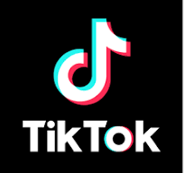

LAB 1.1: GIỚI THIỆU HTML
HTML (HyperText Markup Language) tạm dịch là “Ngôn ngữ đánh dấu siêu văn
bản”
HTML được thiết kế ra để tạo nên các trang web. Nó bao gồm một tập các
thẻ.
Hiện nay, các bạn trẻ Gen Z đã có nhiều thay đổi trong việc chọn ngành,
chọn trường. Sinh ra và lớn lên trong kỷ nguyên số, Gen Z không những chủ
động tìm hiểu ngành nghề mới, bắt kịp xu thế mà còn có cái nhìn khá thực
chất. Với tiêu chí "việc làm hơn bằng cấp", các bạn trẻ đã xem việc học
Cao đẳng là chiếc chìa khóa phù hợp với năng lực để nhanh chóng tham gia
thị trường lao động.
Hiện nay, các bạn trẻ Gen Z đã có nhiều thay đổi trong việc chọn ngành,
chọn trường. Sinh ra và lớn lên trong kỷ nguyên số, Gen Z không những chủ
động tìm hiểu ngành nghề mới, bắt kịp xu thế mà còn có cái nhìn khá thực
chất. Với tiêu chí "việc làm hơn bằng cấp", các bạn trẻ đã xem việc học
Cao đẳng là chiếc chìa khóa phù hợp với năng lực để nhanh chóng tham gia
thị trường lao động. Tập trung vào kiến thức, kỹ năng nghề nghiệp, học
những gì doanh nghiệp cần cùng với thời gian đào tạo rút ngắn chỉ còn 2
năm 4 tháng (tương đương 7 học kỳ), FPT Polytechnic đang là cơ sở giáo dục
được đông đảo gia đình sĩ tử tin tưởng. Không chờ các trường công bố điểm
chuẩn, rất đông sĩ tử 2K4 đã quyết định trở thành sinh viên Cao đẳng FPT
Polytechnic.
BẢN TIN 1: Tik Tok là gì? Và nó hoạt động như thế nào

TikTok là một nền tảng mạng xã hội rất phổ biến cho phép người dùng tạo,
xem và chia sẻ các video ngắn đa dạng các chủ đề các nhau. Với đặc điểm
thích ngắn gọn, thích xem lười đọc của giới trẻ hiện nay, ứng dụng này
ngay lập tức “gây nghiện” và sở hữu mức độ tương tác “khủng”. Những người
sáng tạo nội dung trên ứng dụng này có thể thêm các hiệu ứng phù hợp với
sở thích cá nhân như bộ lọc, nhạc nền, hiệu ứng đặc sắc và nhãn dán vào
video, đồng thời có thể kết hợp về nội dung và tạo video song ca (duet)
chia đôi màn hình ngay cả khi họ ở các địa điểm khác nhau hoặc song ca
cùng ca sĩ / người nổi tiếng mình yêu thích.
BẢN TIN 2:Nguồn gốc của Facebook
 Facebook được sáng lập bởi Mark Zuckerberg - một sinh viên học khoa máy
tính trường Đại học Harvard. Vào năm 2003, khi đang là sinh viên năm 2,
Mark Zuckerberg đã viết Facemash (tiền thân của Facebook) - trang web này
yêu cầu người dùng bình chọn ai là người "hot" (nóng bỏng) nhất bằng cách
sử dụng 2 hình ghép kế bên nhau. Để có thể lấy được các thông tin hình ảnh
sử dụng để so sánh, Mark Zuckerberg đã tấn công vào hệ thống mạng của
trường để lấy những hình ảnh của các sinh viên. Kết quả thật đáng ngạc
nhiên, chỉ trong 4 giờ hoạt động, Facemash đã thu hút hơn 450 lượt truy
cập cùng 22000 lượt xem hình ảnh. Tuy nhiên thì việc làm này của
Zuckerberg bị nhà quản trị mạng trường Harvard phát hiện và tất nhiên Mark
Zuckerberg bị buộc tội về vi phạm an ninh, vi phạm bản quyền, vi phạm
quyền riêng tư cá nhân và phải đối mặt với trục xuất, nhưng cuối cùng thì
hình phạt cũng được bãi bỏ. Ở học kỳ tiếp theo, vào ngày 04/02/2004, Mark
Zuckerberg đã quyết định thành lập The Facebook, ban đầu được sử dụng là
thefacebook.com. Sáu ngày khi trang web được đưa ra, Zuckerberg đã bị cáo
buộc vì đã cố ý lừa 3 người tiền bối trường Harvard tin tưởng rằng sẽ giúp
họ xây dựng một mạng xã hội được gọi là HarvardConnection.com, họ đệ đơn
kiện Zuckerberg vì việc sử dụng ý tưởng của họ để xây dựng 1 sản phẩm cạnh
tranh, sau đó tất cả đã được giải quyết ổn thoả bằng việc đền bù 1,2 triệu
cổ phiếu (trị giá 300 triệu USD tại IPO của Facebook). Facebook chính thức
ra đời vào năm 2005, sau đó chữ the ở phía trước "TheFacebook" đã chính
thức được bỏ đi, để lại tên "Facebook" như ngày nay.
Facebook được sáng lập bởi Mark Zuckerberg - một sinh viên học khoa máy
tính trường Đại học Harvard. Vào năm 2003, khi đang là sinh viên năm 2,
Mark Zuckerberg đã viết Facemash (tiền thân của Facebook) - trang web này
yêu cầu người dùng bình chọn ai là người "hot" (nóng bỏng) nhất bằng cách
sử dụng 2 hình ghép kế bên nhau. Để có thể lấy được các thông tin hình ảnh
sử dụng để so sánh, Mark Zuckerberg đã tấn công vào hệ thống mạng của
trường để lấy những hình ảnh của các sinh viên. Kết quả thật đáng ngạc
nhiên, chỉ trong 4 giờ hoạt động, Facemash đã thu hút hơn 450 lượt truy
cập cùng 22000 lượt xem hình ảnh. Tuy nhiên thì việc làm này của
Zuckerberg bị nhà quản trị mạng trường Harvard phát hiện và tất nhiên Mark
Zuckerberg bị buộc tội về vi phạm an ninh, vi phạm bản quyền, vi phạm
quyền riêng tư cá nhân và phải đối mặt với trục xuất, nhưng cuối cùng thì
hình phạt cũng được bãi bỏ. Ở học kỳ tiếp theo, vào ngày 04/02/2004, Mark
Zuckerberg đã quyết định thành lập The Facebook, ban đầu được sử dụng là
thefacebook.com. Sáu ngày khi trang web được đưa ra, Zuckerberg đã bị cáo
buộc vì đã cố ý lừa 3 người tiền bối trường Harvard tin tưởng rằng sẽ giúp
họ xây dựng một mạng xã hội được gọi là HarvardConnection.com, họ đệ đơn
kiện Zuckerberg vì việc sử dụng ý tưởng của họ để xây dựng 1 sản phẩm cạnh
tranh, sau đó tất cả đã được giải quyết ổn thoả bằng việc đền bù 1,2 triệu
cổ phiếu (trị giá 300 triệu USD tại IPO của Facebook). Facebook chính thức
ra đời vào năm 2005, sau đó chữ the ở phía trước "TheFacebook" đã chính
thức được bỏ đi, để lại tên "Facebook" như ngày nay.
BẢN TIN 3: Instagram là gì?
 Instagram là một mạng xã hội chuyên chia sẻ ảnh và video nên bản thân nó
được thiết kế dựa trên cơ sở sáng tạo ra những hình ảnh đẹp và thu hút.
Đồng thời, nó cũng cung cấp rất nhiều các chế độ chỉnh sửa ảnh và video
khác nhau theo sở thích của người dùng. Instagram là một ứng dụng chia sẻ
ảnh và video miễn phí trên Apple iOS, Android và Windows Phone. Chúng ta
có thể đăng tải ảnh hoặc video lên dịch vụ và chia sẻ chúng với người theo
dõi của mình hoặc với một nhóm bạn bè chọn lọc. Họ có thể xem, bình luận
và thích bài viết mà bạn bè chia sẻ trên Instagram
Instagram là một mạng xã hội chuyên chia sẻ ảnh và video nên bản thân nó
được thiết kế dựa trên cơ sở sáng tạo ra những hình ảnh đẹp và thu hút.
Đồng thời, nó cũng cung cấp rất nhiều các chế độ chỉnh sửa ảnh và video
khác nhau theo sở thích của người dùng. Instagram là một ứng dụng chia sẻ
ảnh và video miễn phí trên Apple iOS, Android và Windows Phone. Chúng ta
có thể đăng tải ảnh hoặc video lên dịch vụ và chia sẻ chúng với người theo
dõi của mình hoặc với một nhóm bạn bè chọn lọc. Họ có thể xem, bình luận
và thích bài viết mà bạn bè chia sẻ trên Instagram